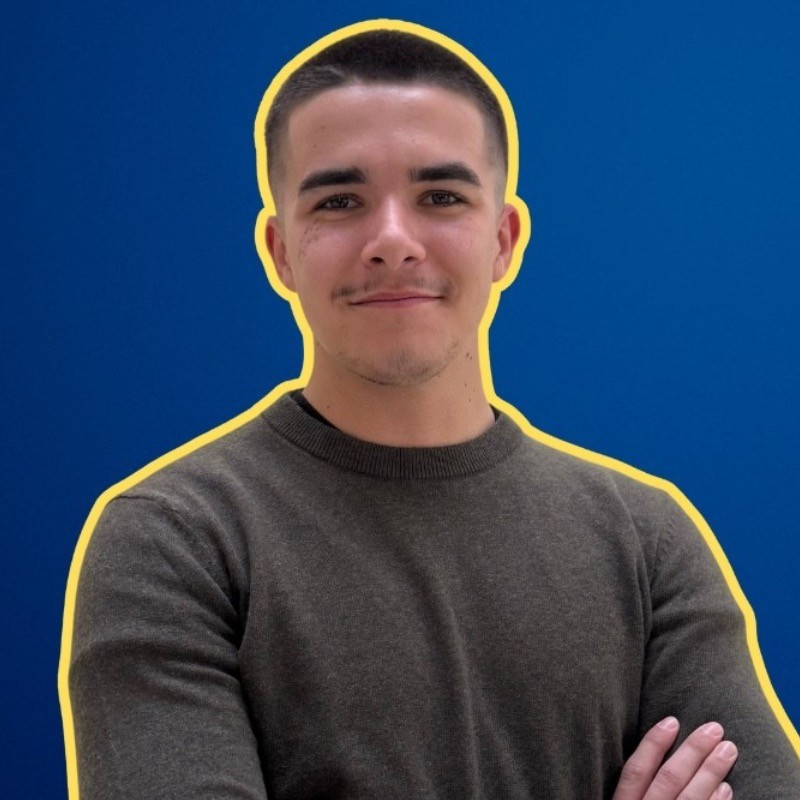

À propos

Je suis Camille DOUAUD, étudiant en Bachelor Informatique (B2) à Ynov Campus Nantes, passionné par la data, l'automatisation et la création d'outils utiles.
Profils
CV
Résumé: Data & Automatisation — Excel/VBA, Power BI (DAX), Python, JavaScript.
Parcours
2025 — Stage chez EUKLEAD (Data & Automatisation, 6 semaines)
2024–2026 — Bachelor Informatique — Ynov Campus Nantes
Avant — Projets personnels en Excel/VBA, Power BI, Python